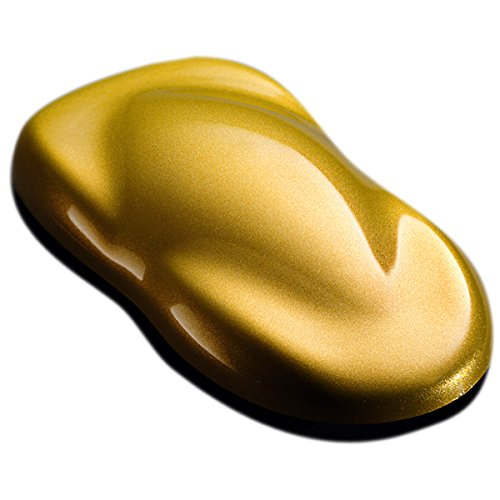

En este apartado encontrarás colores, personalizaciones y por supuesto, diseños únicos para tu vehículo igual que piezas increibles como rines, faldones laterales, diseños para capó, etc.
ofrecemos muchos tipos de colores, entre estos, colores brillantes, colores mate, metálicos e iriscentes para hacer único tu auto
entre los mejores colores que ofrecemos tenemos:


Tenemos las mejores ofertas para cada diseño. Te esperamos!